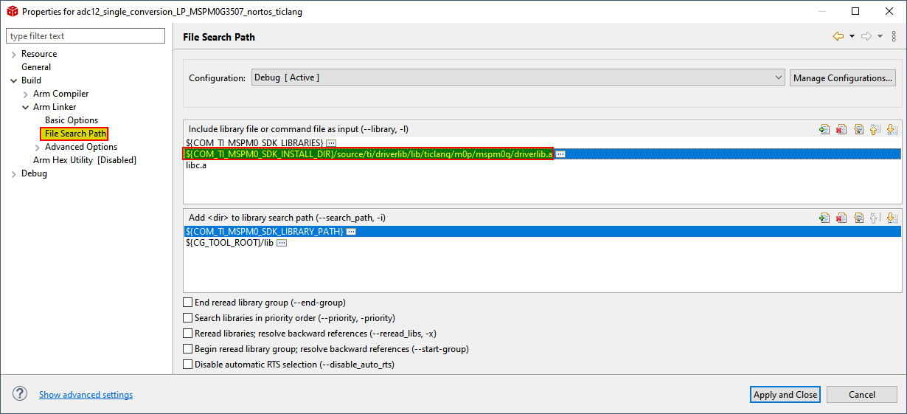
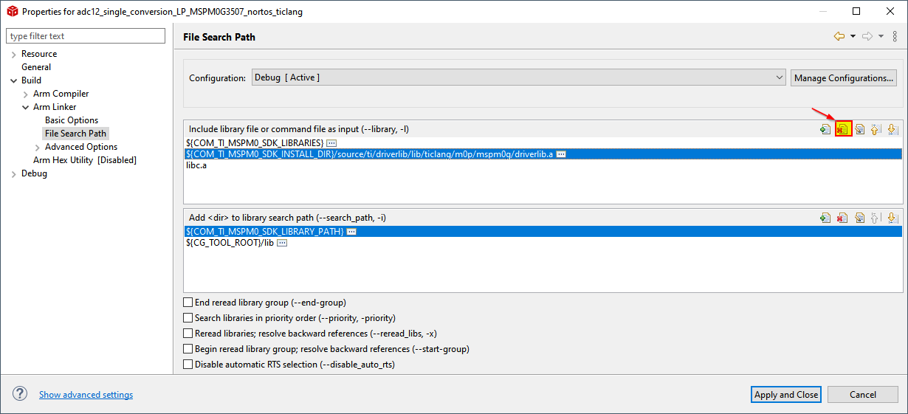
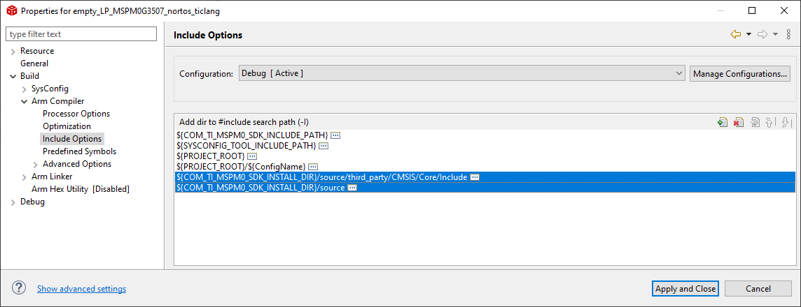
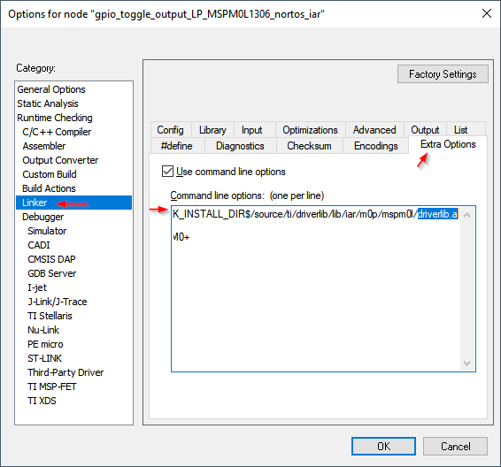
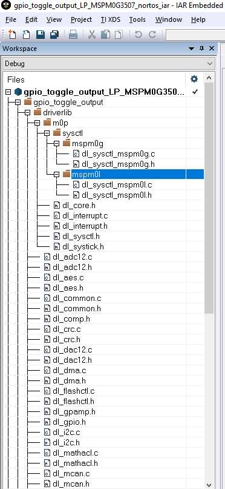
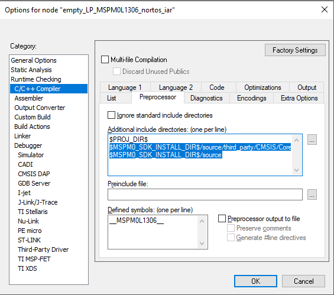
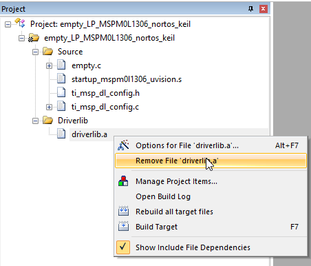
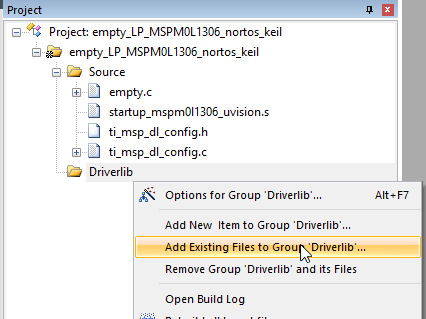
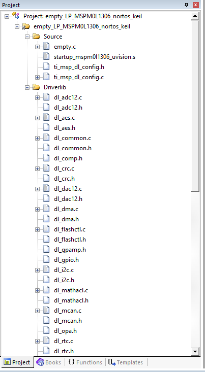
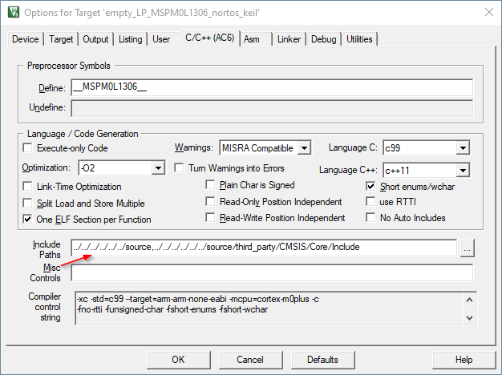

|
|
|
MSPM33C321A Driver Library
1.04.00.00
|
德州仪器 MSPM33 驱动程序库 (DriverLib) 是一组功能齐全的 API，用于配置、控制和操作 MSPM33 平台的硬件外设。
除了能够控制所有 MSPM33 外设，DriverLib 还使用户能够使用常见 Arm 外设，如中断控制器 (NVIC) 和 SysTick。
MSPM33 系列的 DriverLib 已在多种不同的工具链下进行了测试和编译。
| 工具链 |
|---|
| Texas Instruments Code Composer Studio (CCS) Theia 1.2.0 |
| Texas Instruments Code Composer Studio (CCS) 12.5 |
| IAR Embedded Workbench for Arm 9.50.1 |
| GNU C Compiler 9.2.1 (gcc) |
| Keil uVision 5.38 |
DriverLib 旨在为程序员提供一个软件层，与直接访问寄存器相比，这样便于实现更高层次的编程。
使用 DriverLib API 可以配置和驱动 MSPM33 器件的几乎每一个方面。通过使用 DriverLib 提供的高级软件 API，用户可以创建功能强大且易于理解的代码，这些代码可以在不同器件之间轻松地移植。
使用 DriverLib 编写代码将使用户代码更易于阅读，并且更容易在团队中共享。
例如，请查看以下代码片段，它们实现了一个非常简单的函数，用于初始化具有 SPI 功能的引脚。
寄存器级别：
IOMUX->SECCFG.PINCM[25] = 0x00040083;
使用 MSPM33 头文件的寄存器级别：
IOMUX->SECCFG.PINCM[IOMUX_PINCM26] =
IOMUX_PINCM26_PF_SPI1_SCLK | IOMUX_PINCM_PC_CONNECTED | IOMUX_PINCM_INENA_ENABLE;
MSPM33 DriverLib：
DL_GPIO_initPeripheralInputFunction(
IOMUX_PINCM26, IOMUX_PINCM26_PF_SPI1_SCLK);
如所见，DriverLib API 对于软件工程师来说更易读、更合理、更容易编程。不仅如此，生成的代码将完全相同。**在大多数情况下，DriverLib 将生成与编写寄存器级别代码一样内存高效的代码。**
DriverLib 并不旨在提供用户应用程序级别的智能层。它旨在作为程序员的辅助工具，成为更大解决方案的一部分，而不是解决方案本身。
例如，中断处理程序也不包含在 DriverLib API 中。包含了管理/启用/禁用中断的 API，但是中断服务例程的实际编写则由程序员负责。
作为参考，利用 DriverLib API 的典型中断处理程序可以在以下代码片段中看到：
void GROUP1_IRQHandler(void)
{
switch (DL_Interrupt_getPendingGroup(DL_INTERRUPT_GROUP_1)) {
case DL_INTERRUPT_GROUP1_IIDX_GPIOB:
if (DL_GPIO_readPins(GPIOB, DL_GPIO_PIN_21)) {
DL_GPIO_clearPins(GPIOA, DL_GPIO_PIN_0);
}
else {
DL_GPIO_setPins(GPIOA, DL_GPIO_PIN_0);
}
break;
}
}
每个 DriverLib 模块在大多数情况下只会与其设计的模块交互和配置。任何跨模块交互都由用户负责。
例如，UART DriverLib 初始化函数无法自动配置 9600bps 的波特率，因为它无法了解系统频率。
DriverLib 以完整源代码形式发布，并作为 CCS、IAR 和 Keil 的预编译库提供。
<MSPM33 SDK>\source\ti\driverlib 中。<MSPM33 SDK>\source\ti\driverlib\m33 内的文件特定于不同的 MSPM33 系列。<MSPM33 SDK>\source\ti\driverlib\lib 中。无论选择哪种开发环境，使用 MSPM33 系列的 DriverLib 入门都非常简单。
MSPM33 SDK 的示例目录中提供了使用 TI Arm Clang 和 GCC、IAR 和 Keil 的空"骨架"项目。
SDK 中包含的代码示例使用预构建的 DriverLib 库，可用于开发应用程序，但不允许直接更改 DriverLib 源代码。
以下步骤说明如何将 DriverLib 源代码添加到现有项目中。
使用预构建库的现有项目时，请按照以下步骤操作，否则转到步骤 2。
1a. 在要添加 DriverLib 源代码的项目上，转到项目的 Properties → Build → Arm Linker → File Search Path**，在 **Include library file or command file as input 中找到 driverlib.a 并选择它。

1b. 选择 driverlib.a 后，点击 Delete 按钮

1c. 点击 Apply and Close
*复制* 允许在不影响原始 SDK 源代码的情况下进行修改。如果您想要一个独立的项目，此选项很有用。 *链接* 允许直接修改原始 SDK 源代码。使用此选项可更改 SDK 代码库，以便在多个项目之间共享。 以下步骤说明如何复制源代码。跳到步骤 4 以链接源代码。 2a. 在安装文件夹 `<MSPM33_SDK_INSTALL_DIR>/source/ti/driverlib` 中找到 DriverLib 源代码  2b. 复制该文件夹 2c. 找到包含当前项目的 CCS 文件夹。下图显示了一个快捷方式，右键单击示例，选择 **Show in Local Terminal → System Explorer**：  2d. 进入文件夹并粘贴 driverlib 文件夹  2e. 右键单击 *driverlib/lib* 文件夹，选择 **Exclude from Build** 将其从项目中排除  2f. 转到步骤 4，因为复制源文件时不需要链接
3a. 右键单击项目根文件夹，然后点击 **New > Folder**  3b. 点击 "**Link to alternate location (Linked Folder)**"，然后点击 "**Variables**"  3c. 选择 *COM_TI_MSPM33_SDK_INSTALL_DIR*，然后点击 "**Extend**"  3d. 选择 *source > ti > driverlib*，然后点击 **OK**  3e. 请注意，链接路径将相对于 SDK 安装。点击 **Finish**  3f. 右键单击 *driverlib/lib* 文件夹，选择 **Exclude from Build** 将 lib 文件夹从项目中排除 

使用预构建库的现有项目时，请按照以下步骤操作，否则转到步骤 2。
1a. 在要添加 DriverLib 源代码的项目上，转到项目的 Options**，然后 **Linker → Extra Options**，删除包含 **driverlib.a 的行

将 DriverLib 源代码添加到项目中。
文件可以直接从 SDK 添加或复制到项目文件夹中。
<MSPM33_SDK_INSTALL_DIR>/source/ti/driverlib 复制粘贴到您的项目中，并添加复制的文件。直接使用 SDK 中的文件 允许直接修改原始 SDK 源代码。使用此选项可更改 SDK 代码库，以便在多个项目之间共享。要使用此选项，请直接从 <MSPM33_SDK_INSTALL_DIR>/source/ti/driverlib 添加文件。
可以通过选择 Project → Add group 将文件组织到组中，可以通过选择 Project → Add files 或将它们拖放到工作区中来添加文件。


使用预构建库的现有项目时，请按照以下步骤操作，否则转到步骤 2。
1a. 在要添加 DriverLib 源代码的项目上，转到 Project 窗口，展开 DriverLib 文件夹并删除 driverlib.a

将 DriverLib 源代码添加到项目中。
2a. 右键单击 DriverLib 文件夹，选择 "Add existing Files to Group "DriverLib"

2b. 转到 <MSPM33_SDK_INSTALL_DIR>/source/ti/driverlib 的 driverLib 源文件夹，添加所有文件，包括子文件夹中的文件，但 lib 除外

